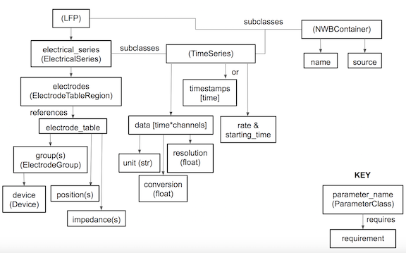
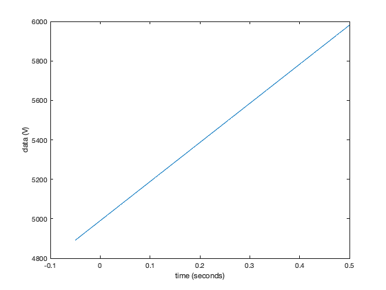

Neurodata Without Borders: Neurophysiology (NWB:N), Extracellular Electrophysiology Tutorial
How to write ecephys data to an NWB file using matnwb.
author: Ben Dichter contact: ben.dichter@gmail.com last edited: March 5, 2019
Contents
NWB file
All contents get added to the NWB file, which is created with the following command
session_start_time = datetime(2018, 3, 1, 12, 0, 0, 'TimeZone', 'local'); nwb = NwbFile( ... 'session_description', 'a test NWB File', ... 'identifier', 'mouse004_day4', ... 'session_start_time', session_start_time);
You can check the contents by displaying the NwbFile object
disp(nwb);
NwbFile with properties:
nwb_version: '2.0b'
acquisition: [1×1 types.untyped.Set]
analysis: [1×1 types.untyped.Set]
file_create_date: []
general: [1×1 types.untyped.Set]
general_data_collection: []
general_devices: [1×1 types.untyped.Set]
general_experiment_description: []
general_experimenter: []
general_extracellular_ephys: [1×1 types.untyped.Set]
general_extracellular_ephys_electrodes: []
general_institution: []
general_intracellular_ephys: [1×1 types.untyped.Set]
general_intracellular_ephys_filtering: []
general_intracellular_ephys_sweep_table: []
general_keywords: []
general_lab: []
general_notes: []
general_optogenetics: [1×1 types.untyped.Set]
general_optophysiology: [1×1 types.untyped.Set]
general_pharmacology: []
general_protocol: []
general_related_publications: []
general_session_id: []
general_slices: []
general_source_script: []
general_source_script_file_name: []
general_specifications: [1×1 types.untyped.Set]
general_stimulus: []
general_subject: []
general_surgery: []
general_virus: []
identifier: 'mouse004_day4'
intervals: [1×1 types.untyped.Set]
intervals_epochs: []
intervals_invalid_times: []
intervals_trials: []
processing: [1×1 types.untyped.Set]
session_description: 'a test NWB File'
session_start_time: 2018-03-01T12:00:00.000000-05:00
stimulus_presentation: [1×1 types.untyped.Set]
stimulus_templates: [1×1 types.untyped.Set]
timestamps_reference_time: []
units: []
help: 'an NWB:N file for storing cellular-based neurophysiology data'
Subject
Subject-specific information goes in type Subject in location general_subject.
nwb.general_subject = types.core.Subject( ... 'description', 'mouse 5', 'age', '9 months', ... 'sex', 'M', 'species', 'Mus musculus');
Data dependencies
The data needs to be added to nwb in a specific order, which is specified by the data dependencies in the schema. The data dependencies for LFP are illustrated in the following diagram. In order to write LFP, you need to specify what electrodes it came from. To do that, you first need to construct an electrode table.

Electrode Table
Electrode tables hold the position and group information about each electrode and the brain region and filtering. Groups organize electrodes within a single device. Devices can have 1 or more groups. In this example, we have 2 devices that each only have a single group.
shank_channels = [3, 4];
variables = {'x', 'y', 'z', 'imp', 'location', 'filtering', 'group', 'label'};
device_name = 'implant';
nwb.general_devices.set(device_name, types.core.Device());
device_link = types.untyped.SoftLink(['/general/devices/' device_name]);
for ishank = 1:length(shank_channels)
nelecs = shank_channels(ishank);
group_name = ['shank' num2str(ishank)];
nwb.general_extracellular_ephys.set(group_name, ...
types.core.ElectrodeGroup( ...
'description', ['electrode group for shank' num2str(ishank)], ...
'location', 'brain area', ...
'device', device_link));
group_object_view = types.untyped.ObjectView( ...
['/general/extracellular_ephys/' group_name]);
for ielec = 1:length(nelecs)
if ishank == 1 && ielec == 1
tbl = table(NaN, NaN, NaN, NaN, {'unknown'}, {'unknown'}, ...
group_object_view, {[group_name 'elec' num2str(ielec)]}, ...
'VariableNames', variables);
else
tbl = [tbl; {NaN, NaN, NaN, NaN, 'unknown', 'unknown', ...
group_object_view, [group_name 'elec' num2str(ielec)]}];
end
end
end
% add the |DynamicTable| object to the NWB file in
% /general/extracellular_ephys/electrodes
electrode_table = util.table2nwb(tbl, 'all electrodes');
nwb.general_extracellular_ephys_electrodes = electrode_table;
Multielectrode recording
In order to write a multielectrode recording, you need to construct a region view of the electrode table to link the signal to the electrodes that generated them. You must do this even if the signal is from all of the electrodes. Here we will create a reference that includes all electrodes. Then we will generate a signal 1000 timepoints long from 10 channels.
electrodes_object_view = types.untyped.ObjectView( ... '/general/extracellular_ephys/electrodes'); electrode_table_region = types.core.DynamicTableRegion( ... 'table', electrodes_object_view, ... 'description', 'all electrodes', ... 'data', [0 height(tbl)-1]');
once you have the ElectrodeTableRegion object, you can create an ElectricalSeries object to hold your multielectrode data. An ElectricalSeries is an example of a TimeSeries object. For all TimeSeries objects, you have 2 options for storing time information. The first is to use starting_time and rate:
% generate data for demonstration data = reshape(1:10000, 10, 1000); electrical_series = types.core.ElectricalSeries( ... 'starting_time', 0.0, ... % seconds 'starting_time_rate', 200., ... % Hz 'data', data, ... 'electrodes', electrode_table_region, ... 'data_unit', 'V'); nwb.acquisition.set('multielectrode_recording', electrical_series);
You can also specify time using timestamps. This is particularly useful if the sample times are not evenly sampled. In this case, the electrical series constructor will look like this
electrical_series = types.core.ElectricalSeries(... 'timestamps', (1:1000)/200, ... 'data', data,... 'electrodes', electrode_table_region,... 'data_unit', 'V');
LFP
Store LFP (generally downsampled and/or filtered data) as an ElectricalSeries in a processing module called 'ecephys'.
ecephys_module = types.core.ProcessingModule(... 'description', 'holds extracellular electrophysiology data'); ecephys_module.nwbdatainterface.set('LFP', ... types.core.LFP('lfp', electrical_series)); nwb.processing.set('ecephys', ecephys_module);
Trials
You can store trial information in the trials table
trials = types.core.TimeIntervals( ... 'colnames', {'correct','start_time','stop_time'}, ... 'description', 'trial data and properties', ... 'id', types.core.ElementIdentifiers('data', 0:2), ... 'start_time', types.core.VectorData('data', [.1, 1.5, 2.5], ... 'description','start time of trial'), ... 'stop_time', types.core.VectorData('data', [1., 2., 3.], ... 'description','end of each trial'), ... 'correct', types.core.VectorData('data', [false, true, false], ... 'description','my description')); nwb.intervals_trials = trials;
colnames is flexible - it can store any column names and the entries can be any data type, which allows you to store any information you need about trials.
DynamicTables
NWB makes use of the DynamicTable neurodata_type to deal with data organized in a table. These tables are powerful in that they can contain user-defined columns, can hold columns where each row is itself an array, and can reference other tables. We have already seen one example of a DynamicTable with the electrodes table. We will contruct a similar table for the units table, but this time we will show off the flexibility and customization of DynamicTable|s. When adding a column to a |DynamicTable, you need to ask yourself 3 questions: 1) Is this a default name value or a user-defined value 2) Is each element of this column itself an array (e.g. spike times) 3) Is this column referencing another column (e.g. electrodes)?
Standard columns should be VectorData objects.
1) If the column is a default optional column, it can be added to the table by assigning the VectorData to a table attribute of the same name. This is illustrated by waveform_mean in the units table below. On the other hand, if the column is a custom name, it must be added by setting DynamicTable.vectordata.set('name', VectorData) (e.g. 'quality') below. You can see what the default column names for units are by typing nwb.units. colnames, description, id, vectordata, vectorindex and help are all DynamicTable properties, but the others are default columns.
2) Each row of a column is an array of varying length, you must add two objects, a VectorData and a VectorIndex. The VectorData object stores all of the data. For instance for spike times, it stores all of the spike times for the first cell, then the second, then the third, all the way up in a single array. The VectorIndex object indicates where to slice the VectorData object in order to get just the data for a specific row. A convenience function util.create_indexed_column is supplied to make the creation of these objects easier. Its usage is demonstrated for 'spike_times' and 'obs_invervals'.
3) If a column is a reference to another table, it should not be a VectorData but instead a DynamicTableRegion object, which can be indexed with a VectorIndex just like VectorData objects to create an array of references per row. You can create a DynamicTableRegion VectorIndex pair by using util.create_indexed_column and including the ObjectView of the table as the 5th argument.
% First, instantiate the table, listing all of the columns that will be % added and us the |'id'| argument to indicate the number of rows. Ifa % value is indexed, only the column name is included, not the index. For % instance, |'spike_times_index'| is not added to the array. nwb.units = types.core.Units( ... 'colnames', {'spike_times', 'waveform_mean', 'quality', 'electrodes'}, ... 'description', 'units table', ... 'id', types.core.ElementIdentifiers('data', int64(0:2))); % Then you can add the data column-by-column: waveform_mean = types.core.VectorData('data', ones(30, 3), ... 'description', 'mean of waveform'); nwb.units.waveform_mean = waveform_mean; quality = types.core.VectorData('data', [.9, .1, .2],... 'description', 'sorting quality score out of 1'); nwb.units.vectordata.set('quality', quality); spike_times_cells = {[0.1, 0.21, 0.5, 0.61], [0.34, 0.36, 0.66, 0.69], [0.4, 0.43]}; [spike_times_vector, spike_times_index] = util.create_indexed_column( ... spike_times_cells, '/units/spike_times'); nwb.units.spike_times = spike_times_vector; nwb.units.spike_times_index = spike_times_index; [electrodes, electrodes_index] = util.create_indexed_column( ... {[0,1], [1,2], [2,3]}, '/units/electrodes', [], [], ... electrodes_object_view); nwb.units.electrodes = electrodes; nwb.units.electrodes_index = electrodes_index;
Side note about electrodes
In the above example, we assigned multiple electrodes to each unit. This is useful in some recording setups, where electrodes are close together and multiple electrodes pick up signal from a single cell. In other instances, it makes more sense to only assign a single electrode per cell. In this case you do not need to define an electrodes_index. Instead, you can add electrodes like this:
% clear electrodes_index (not generally necessary) nwb.units.electrodes_index = []; % assign DynamicTableRegion object with n elements nwb.units.electrodes = types.core.DynamicTableRegion( ... 'table', electrodes_object_view, ... 'description', 'single electrodes', ... 'data', int64([0, 0, 1]));
Processing Modules
Measurements go in acquisition and subject or session data goes in general, but if you have the intermediate processing results, you should put them in a processing module.
behavior_mod = types.core.ProcessingModule('description', 'contains behavioral data');
Position data is stored first in a SpatialSeries object, which is a TimeSeries. This is then stored in Position (a MultiContainerInterface), which is stored in a processing module
position_data = [linspace(0,10,100); linspace(1,8,100)]'; position_ts = types.core.SpatialSeries( ... 'data', position_data, ... 'reference_frame', 'unknown', ... 'data_conversion', 1.0, 'data_resolution', NaN, ... 'timestamps', linspace(0, 100)/200); Position = types.core.Position('Position', position_ts); behavior_mod.nwbdatainterface.set('Position', Position);
I am going to call this processing module "behavior." As a convention, try to use the names of the NWB core namespace modules as the names of processing modules. However this is not a rule and you may use any name.
nwb.processing.set('behavior', behavior_mod);
Writing the file
Once you have added all of the data types you want to a file, you can save it with the following command
nwbExport(nwb, 'ecephys_tutorial.nwb')
Warning: Overwriting ecephys_tutorial.nwb
Reading the file
load an NWB file object with
nwb2 = nwbRead('ecephys_tutorial.nwb');
Reading data
Note that nwbRead does not load all of the dataset contained within the file. matnwb automatically supports "lazy read" which means you only read data to memory when you need it, and only read the data you need. Notice the command
disp(nwb2.acquisition.get('multielectrode_recording').data)
DataStub with properties:
filename: 'ecephys_tutorial.nwb'
path: '/acquisition/multielectrode_recording/data'
dims: [1000 10]
returns a DataStub object and does not output the values contained in data. To get these values, run
data = nwb2.acquisition.get('multielectrode_recording').data.load;
disp(data(:, 1:10));
1 11 21 31 41 51 61 71 81 91
2 12 22 32 42 52 62 72 82 92
3 13 23 33 43 53 63 73 83 93
4 14 24 34 44 54 64 74 84 94
5 15 25 35 45 55 65 75 85 95
6 16 26 36 46 56 66 76 86 96
7 17 27 37 47 57 67 77 87 97
8 18 28 38 48 58 68 78 88 98
9 19 29 39 49 59 69 79 89 99
10 20 30 40 50 60 70 80 90 100
Loading all of the data can be a problem when dealing with real data that can be several GBs or even TBs per session. In these cases you can load a specific section of data. For instance, here is how you would load data starting at the index (1,1) and read 10 rows and 20 columns of data
nwb2.acquisition.get('multielectrode_recording').data.load([1,1], [10,20])
ans =
Columns 1 through 13
1 11 21 31 41 51 61 71 81 91 101 111 121
2 12 22 32 42 52 62 72 82 92 102 112 122
3 13 23 33 43 53 63 73 83 93 103 113 123
4 14 24 34 44 54 64 74 84 94 104 114 124
5 15 25 35 45 55 65 75 85 95 105 115 125
6 16 26 36 46 56 66 76 86 96 106 116 126
7 17 27 37 47 57 67 77 87 97 107 117 127
8 18 28 38 48 58 68 78 88 98 108 118 128
9 19 29 39 49 59 69 79 89 99 109 119 129
10 20 30 40 50 60 70 80 90 100 110 120 130
Columns 14 through 20
131 141 151 161 171 181 191
132 142 152 162 172 182 192
133 143 153 163 173 183 193
134 144 154 164 174 184 194
135 145 155 165 175 185 195
136 146 156 166 176 186 196
137 147 157 167 177 187 197
138 148 158 168 178 188 198
139 149 159 169 179 189 199
140 150 160 170 180 190 200
run doc('types.untyped.DataStub') for more details on manual partial loading. There are several convenience functions that make common data loading patterns easier. The following convenience function loads data for all trials
% data from .05 seconds before and half a second after start of each trial window = [-.05, 0.5]; % seconds % only trials where the attribute 'correct' == 0 and 'start_time' is > 0.5 conditions = containers.Map({'correct', 'start_time'}, {0, @(x)x>0.5}); % get multielectode data timeseries = nwb2.acquisition.get('multielectrode_recording'); [trial_data, tt] = util.loadTrialAlignedTimeSeriesData(nwb2, ... timeseries, window, conditions); % plot data from the first electrode for that one plot(tt, squeeze(trial_data(:, 1, :))) xlabel('time (seconds)') ylabel(['data (' timeseries.data_unit ')'])
Reading indexed column (e.g. spike times)
data = util.read_indexed_column(nwb.units.spike_times_index, nwb.units.spike_times, 2);
External Links
NWB allows you to link to datasets within another file through HDF5 ExternalLink s. This is useful for separating out large datasets that are not always needed. It also allows you to store data once, and access it across many NWB files, so it is useful for storing subject-related data that is the same for all sessions. Here is an example of creating a link from the Subject object from the ecephys_tutorial.nwb file we just created in a new file.
nwb3 = NwbFile('session_description', 'a test NWB File', ... 'identifier', 'mouse004_day4', ... 'session_start_time', session_start_time); nwb3.general_subject = types.untyped.ExternalLink('ecephys_tutorial.nwb',... '/general/subject'); nwbExport(nwb3, 'link_test.nwb')
Warning: Overwriting link_test.nwb